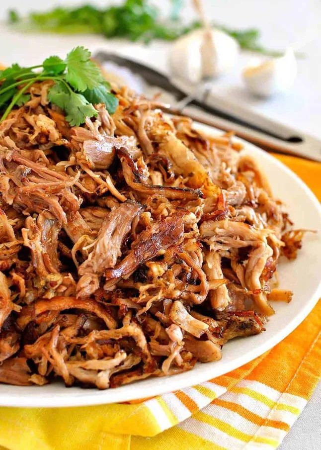

Home
Carnitas (Mexican Pulled Pork)

Description
A favourite to go with any Mexican inspired dish. We use it with nachos, tacos, buttitos etc. Really easy to put together using the instant pot and always comes out a treat. Takes roughly two hours to prep and cook.
Ingredients
- 2kg pork shoulder (skinless boneless)
- 2 1/2 tsp salt
- 1 tsp black pepper
- 1 onion (chopped)
- 1 jalepeno
- 4 garlic cloves
- 3/4 cup orange juice
- 1 tbs dried oregano
- 2 tsp ground cumin
- 1 tbsp olive oil
Method
- Rinse and dry the pork shoulder, rub all over with salt and pepper.
- Combine the Rub ingredients then rub all over the pork.
- Place the pork in a slow cooker (fat cap up), top with the onion, jalapeño, minced garlic (don’t worry about spreading it) and squeeze over the juice of the oranges.
- Pressure cook for 1 h 30 minutes on high. Let pressure release naturally.
- Pork should be tender enough to shred. Remove from slow cooker and let cool slightly. Then shred using two forks.
- Skim off the fat from the juices remaining in the slow cooker and discard.
- Skim off the fat from the juices remaining in the slow cooker and discard.
- Heat 1 tbsp of oil in a large non stick pan or well seasoned skillet over high heat. Spread pork in the pan, drizzle over some juices. Wait until the juices evaporate and the bottom side is golden brown and crusty. Turn and just briefly sear the other side – you don’t want to make it brown all over because then it’s too crispy, need tender juicy bits.
- Remove pork from skillet. Repeat in batches (takes me 4 batches) – don’t crowd the pan.
- Just before serving, drizzle over more juices and serve hot.